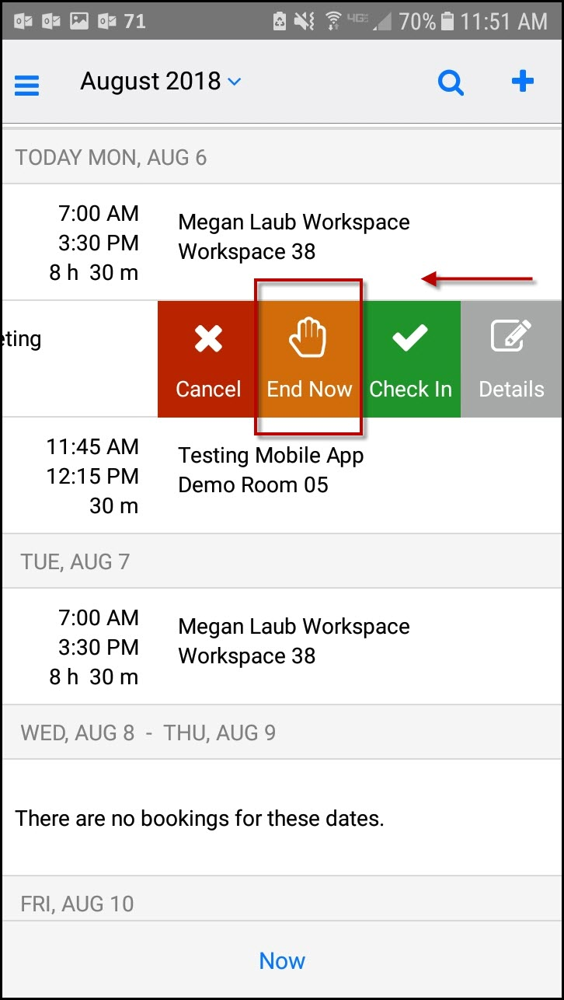
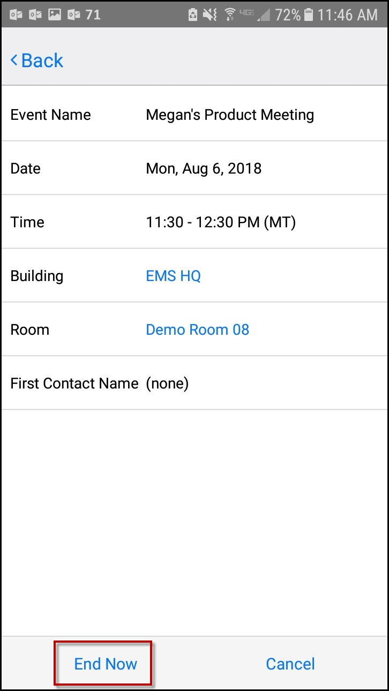

End a Meeting Early
If your meeting has taken less than the reserved time, you can End a meeting Now to release the space for others.
You can End a Meeting early in one of two ways:
- From the Calendar on the Home Page:
- Locate the meeting on the Calendar that you want to End Now and swipe left.
- If you are able to end the meeting, an End Now option will appear. The meeting organizer or booking template determines whether this option is available.
NOTE: The End Now button will only appear on non–Exchange-enabled templates.

- By editing the event:
- Tap on the event and click Edit in the upper right-hand corner.
- Click the End Now link in the lower left corner.

See Also: Invite People.